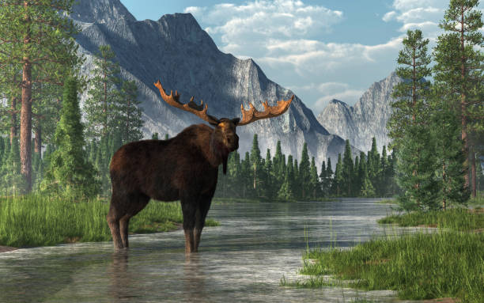
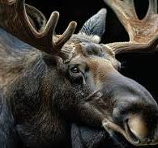
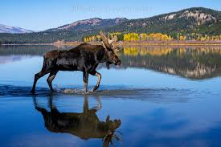

Introduction
Moose are the largest living members of the deer family. These impressive mammals are native to the boreal forests and temperate broadleaf and mixed forests of the Northern Hemisphere. Known for their immense size, distinctive antlers (on males), and long legs, moose are iconic symbols of the wilderness in regions like Canada, Alaska, and Russia.
They are well-adapted to cold climates and are excellent swimmers, often found near lakes, rivers, and wetlands where they feed on aquatic vegetation. Despite their size, they can move surprisingly quietly through dense forests.
Appearance
Adult moose are instantly recognizable by their size and dark brown to black coat. They have long, stout legs, a short tail, and a characteristic humped back. A prominent feature is the dewlap, a flap of skin hanging from the throat.
Male moose, called bulls, grow large, palm-shaped antlers each year. These antlers can spread over 6 feet wide and are shed in the winter and regrown in the spring. Antlers are used in dominance displays and combat during the mating season. Female moose, called cows, do not have antlers.
Habitat
Moose thrive in cold environments with access to both forest cover for shelter and wetlands or lakes for food and escape from predators and insects. They inhabit forests across Canada, Alaska, the northeastern and Rocky Mountain regions of the United States, as well as Scandinavia, the Baltic states, and Russia.
Their long legs allow them to navigate deep snow in winter and wade into water during warmer months. Access to water is crucial, especially in summer, as it provides a food source and relief from heat and biting insects.
Diet
Moose are herbivores, meaning they primarily eat plants. Their diet varies seasonally. In the summer, they consume large quantities of leaves from trees and shrubs, as well as aquatic plants like water lilies, which are a vital source of sodium.
In the winter, when preferred foods are scarce, they browse on the twigs and bark of woody plants, such as willow, birch, and aspen. An adult moose can consume tens of pounds of vegetation per day to maintain its massive body size.
Behavior
Moose are generally solitary animals, although cows may be seen with their calves. They are most active during dawn and dusk. Despite their size, they are surprisingly agile and can run relatively fast.
They are excellent swimmers and will often enter water to feed, cool off, or escape threats. While typically not aggressive towards humans, moose can be dangerous if provoked, especially cows protecting calves or bulls during the mating season.